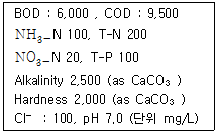
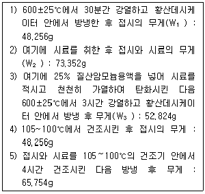
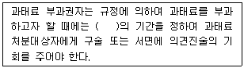
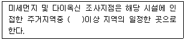

폐기물처리기사 (2006-03-05 기출문제)
1과목: 폐기물 개론
1. 발열량분석에 대한 설명 중 옳지 않은 것은?
- 저위발열량은 소각로 설계기준이 된다.
- 원소분석방법에 의하여 저위발열량을 추정할 수 있다.
- 단열열량계에 의하여 저위발열량을 추정할 수 있다.
- 원소분석방법 중 Steuer의 식은 O가 전부 CO의 형태로 되어 있다고 가정한 경우이다.
(정답률: 알수없음)

2. 수거대상인구가 100,000명인 지역에서 30일간 일반폐기물의 수거상태를 조사 결과 다음과 같이 조사되었다. 이 지역의 1일 1인당 쓰레기 발생량은? (단, 수거에 사용된 트럭=7대, 수거횟수=250회/대, 트럭의 용적=10m3, 수거된 쓰레기의 밀도=400kg/m3)
- 2.1 kg/인ㆍ일
- 2.3 kg/인ㆍ일
- 2.5 kg/인ㆍ일
- 2.7 kg/인ㆍ일
(정답률: 알수없음)
3. 집배수관을 덮는 필터재료가 주변에서 유입된 미립자에 의해 막히지 않도록 하기 위한 조건으로 옳은 것은? (단, D15, D85 는 입경누적 곡선에서 통과한 중량의 백분율로 15%, 85%에 상당하는 입경)
- {D15 (필터재료)} / {D85 (주변토양)}＜ 5
- {D15 (필터재료)} / {D85 (주변토양)} ＞5
- {D15 (필터재료)} / {D85 (주변토양)}＜ 2
- {D15 (필터재료)} / {D85 (주변토양)} ＞2
(정답률: 알수없음)
4. 도시폐기물을 입자 크기별로 분류하기 위하여 회전식 원통 스크린(Trommel)을 많이 이용한다. Trommel 스크린에 대한 설명 중 옳지 않은 것은?
- 원통 내로 압축공기를 송입할 수 있다.
- 원통의 체로 수평으로부터 5도의 전후로 경사된 축을 중심으로 회전시켜 체분리하는 것이다.
- 원통내 부하율(폐기물)이 증가하면 선별효율은 감소한다.
- 파쇄입경의 차이가 작을수록 선별효과는 적어지나 선별효율은 커져 분별공정이 잘 진행된다.
(정답률: 알수없음)
5. 폐기물 발생량의 조사방법이 아닌 것은?
- 적재차량 계수분석
- 직접 계근법
- 원단위분석법
- 물질수지법
(정답률: 알수없음)
6. 해안매립에 대한 설명 중 옳지 않은 것은?
- 순차투입공법은 호안측에서부터 쓰레기를 투입하여 순차적으로 육지화하는 방법이다.
- 수중투기공법은 고립된 매립지 내의 해수를 그대로 둔채 쓰레기를 투기하는 매립방법이다.
- 해안매립공법은 매립작업이 연속적인 투입방법으로 이루어지므로 완전한 샌드위치 방식의 매립에 적합하다.
- 박층뿌림공법은 밑면이 뚫린 바지선 등으로 쓰레기를 박층으로 떨어뜨려 뿌려줌으로써 바닥지반의 하중을 균등하게 해주는 방법이다.
(정답률: 알수없음)
7. 4%의 고형물을 함유하는 슬러지 150m3를 탈수 시켜 70%의 함수율을 갖는 케이크를 얻었다면 탈수된 케이크의 양은 몇 m3 인가? (단, 슬러지의 밀도는 1ton/m3 이다.)
- 10m3
- 15m3
- 20m3
- 25m3
(정답률: 알수없음)
8. 전처리로서 파쇄에 의하여 얻어질 수 있는 효과에 대하여 설명한 것 중 가장 거리가 먼 것은?
- 대형폐기물 등에 대해서는 운반경비를 절감 가능
- 소각로 등의 폐쇄현상을 방지하는 것이 가능
- 밀도를 적게하여 처리장치를 최소화하는 것이 가능
- 혼합물을 균일화하여 반응 촉진
(정답률: 알수없음)
9. 쓰레기 발생량 예측방법 중 모든 인자를 시간에 대한 함수로 나타낸 후 시간에 대한 함수로 표현된 각 영향인자들 간의 상관관계를 수식화하는 방법은?
- 경향법
- 다중회귀모델
- 회귀직선모델
- 동적모사모델
(정답률: 알수없음)
10. 어느 도시 쓰레기 중 비가연성 부분이 중량비로 약 60% 차지하였다. 지금 밀도가 400kg/m3인 쓰레기 8m3가 있을 때 가연성 물질의 양(Ton)은 얼마인가?
- 1.28
- 1.92
- 3.2
- 3.84
(정답률: 알수없음)
11. 새로운 쓰레기 수거 시스템인 관거수거방법 중 공기수송에 대한 설명으로 옳지 않은 것은?
- 공기수송은 고층주택 밀집지역에 적합하며 소음방지 시설이 필요하다.
- 진공수송은 쓰레기를 받는 쪽에서 흡인하여 수송하는 것으로 진공압력은 1.5kgf/cm2 이상이다.
- 진공수송은 경제적인 수집거리는 약 2km 정도이다.
- 가압수송은 쓰레기를 불어서 수송하는 방법으로 진공수송보다는 수송거리를 더 길게할 수 있다.
(정답률: 알수없음)
12. 탈수 전의 슬러지량(m3)은 X, 함수율은 V이고, 탈수 후의 슬러지량(m3)은 X1, 함수율은 V1일 때 X와 X1 의 관계식으로 옳은 것은?
- X1 = X(100-V)×100
- X1 = X(100-V1 )×100
- X1 = {X(100-V)}/{ 100-V1 }
- X1 = {X(100-V1)} /{ 100-V }
(정답률: 알수없음)
13. 침출수의 특성에 대한 설명 중 옳지 않은 것은?
- 복토의 다짐밀도가 높을수록 침출수 농도는 높다.
- 혐기성 매립방식이 호기성 매립방식에 비해 침출수 농도가 낮다.
- 유기폐기물 함량이 높을수록 유기오염농도가 높고 초기 BOD/COD 비가 크다.
- BOD/COD 비는 초기에는 높고 시간 경과에 따라 낮아진다.
(정답률: 알수없음)
14. 단열열량계로 측정할 때 얻어지는 발열량에 대한 설명으로 가장 적절한 것은?
- 습량기준 저위발열량
- 습량기준 고위발열량
- 건량기준 저위발열량
- 건량기준 고위발열량
(정답률: 알수없음)
15. 유기성 슬러지의 재이용 방법으로 가장 거리가 먼 것은?
- 소화가스 이용
- 열분해
- 퇴비화
- 유효성분 직접추출
(정답률: 알수없음)
16. 함수율 60%의 폐기물 1ton을 건조시켜 20%로 하였다면 이 때의 폐기물 중량은?
- 0.33ton
- 0.50ton
- 0.67ton
- 0.70ton
(정답률: 알수없음)
17. 토양의 삼상(三相)에 대한 설명 중 옳지 않은 것은?
- 고상, 액상, 기상의 조성을 체적백분율로 표시한 것이 삼상분포이다.
- 고상율은 대부분 토양에서 80~90%를 차지하며 화산재 기원의 토양은 그보다 작아 70 전, 후이다.
- 액상율 및 기상율은 강우와 건조에 의해 용이하게 변화한다.
- 토양의 고상 중 모래는 토양의 구조를 결정함과 동시에 뼈대의 역할을 한다.
(정답률: 알수없음)
18. 폐기물 관리를 위해서 가장 중요한 1차적인 근본적 항목에 해당되는 것은?
- 재이용
- 감량화
- 재활용
- 퇴비화
(정답률: 알수없음)
19. 유동층 소각로의 장점에 대한 설명 중 옳지 않은 것은?
- 투입이나 유동화를 위해 파쇄가 필요하다.
- 유동매체의 큰 열용량 때문에 전소 및 혼소가 가능하다.
- 로내 기계적 가동부분이 적어 고정율이 낮다.
- 연소료율이 높아 미연소분 배출이 적고 2차 연소실이 불필요하다.
(정답률: 알수없음)
20. 폐기물의 수거노선 설정시 고려해야 할 사항으로 가장 거리가 먼 것은?
- 지형이 언덕인 경우는 내려가면서 수거한다.
- U자 회전을 피하여 수거한다.
- 가능한 한 간선도로 부근에서 시작하고 끝나도록 한다.
- 가능한 한 반시계방향으로 수거노선을 정한다.
(정답률: 알수없음)
2과목: 폐기물 처리 기술
21. 함수율 99%(중량)의 슬러지를 농축하여 함수율 92%(중량)의 농축슬러지를 얻었다. 슬러지의 용적은 몇 분의 1로 감소하는가?
- 1/2
- 1/4
- 1/6
- 1/8
(정답률: 알수없음)
22. 침출수 집배수 설비에 대한 설명으로 옳지 않은 것은?
- 집배수층은 일반적으로 자갈을 많이 사용한다.
- 집배수관의 최소직경은 30cm이상이다.
- 집배수설비는 발생하는 침출수를 차수설비로부터 제거 시키는 설비이다.
- 집배수층의 바닥경사는 2~4% 정도이다.
(정답률: 알수없음)
23. 매립후 최종 복토의 두께는 얼마나 적당한가?
- 5~15 cm
- 15~30 cm
- 30~60 cm
- 60 cm이상
(정답률: 알수없음)
24. 어떤 매립지에서 다음과 같은 침출수를 생물학적 방법으로 처리하고자 한다. 처리를 원활기 하기 위하여 조성중 보충 투입이 필요한 성분은?

- N
- P
- Cl
- Alkalinity
(정답률: 알수없음)
25. 슬러지의 혐기성 소화 가스 중의 메탄 함량이 70%, 이산화탄소의 함량이 30%라고 할 때 소화조의 작동상태는?
- 불안정한 정상 상태이다.
- 평균적인 정상 상태이다.
- 비정상적인 상태이다.
- 소화로 인하여 가스발생랑이 증가한 상태이다.
(정답률: 알수없음)
26. 폐기물 매립지의 매립 후 4단계 분해과정의 경과기간에 대한 설명으로 옳지 않는 것은?
- 1단계는 초기조절단계이며 매립 후 며칠 또는 몇 개월 가량 지속적으로 초기혐기성 조건이다.
- 2단계는 혐기성비메탄화 단계이며 임의성 미생물에 의하여 SO42- 와 NO3- 가 환원되는 단계로서 CO2가 생성된다.
- 3단계는 혐기성메탄 생성 축적단계이며 CH4 가스가 생산되는 혐기성 단계로서 온도가 55℃까지 증가된다.
- 4단계는 혐기성 정상상태 단계이며 가스중 CH4 와 CO2 의 함량이 거의 일정한 정상상태로서 혐기성 조건이다.
(정답률: 알수없음)
27. 토양오염 처리기술 중 토양세척법에 관한 설명으로 가장 거리가 먼 것은?
- 적절한 세척제를 사용하여 토양 입자에 결합되어 있는 유해 유기오염물질의 표면장력을 약화시키거나 중금속을 분리시켜 처리하는 기법이다.
- 세척제로 사용되는 산, 염기, 착염물질은 금속물질을 추출, 정화시키는데 주로 이용된다.
- 적용방법에 따라 in-situ, ex-situ 방법이 있으며 in-situ 기법은 토양의 투수성에 많은 제약을 받는다.
- 휘발성이 큰 물질을 주로 정화하게 되며 비휘발성, 생물학적 난분해성물질도 분리 정화되는 부수적인 효과도 기대할 수 있다.
(정답률: 알수없음)
28. 고화법은 고화재가 무기성인가 유기성인가에 따라 무기성 방법과 유기성 방법으로 나눌 수 있다. 유기성 고형화의 특징에 대한 설명으로 옳지 않은 것은?
- 수밀성이 매우 크며 다영한 폐기물에 적용할 수 있으나 처리비용이 고가이다.
- 최종 고화재의 체적 증가가 다양하다.
- 상온 및 상압하에서 처리가 가능하며 중합체 구조로서 장기적 안정화가 가능하다.
- 미생, 자외선데 대한 안정성이 약하다.
(정답률: 알수없음)
29. 유해폐기물 고화처리 시 흔히 사용하는 지표인 Mix Ratio(MR 또는 섞음율)는 고화제 첨가량과 폐기물양과의 중량비로 정의된다. 고화처리 전의 폐기물의 밀도가 1.0g/cm3, 고화처리된 폐기물의 밀도가 1.3g/cm3 이라면 MR이 0.2 일 때 고화처리된 폐기물의 부피는 처리전 폐기물의 부피의 몇 배로 되는가?
- 0.52
- 0.73
- 0.80
- 0.92
(정답률: 알수없음)
30. 슬러지 처리방법 중 습식산화에 대한 설명으로 가장 거리가 먼 것은?
- 액상슬러지에 열과 압력을 작용시켜 용존산소에 의해 화학적으로 슬러지 내의 유기물을 산화시킨다.
- 산화범위에 융통성이 있고 슬러지의 질에 영향이 적다.
- 처리된 슬러지의 침전성 및 탈수성이 좋다.
- 흡열 반응이므로 에너지 요구량이 크다.
(정답률: 알수없음)
31. 쓰레기 퇴비화 시 쓰레기의 C/N비를 낮추기 위하여 분뇨를 혼합하는 경우가 있다. 이러한 관점에서 생분뇨와 소화된 분뇨중 C/N비 감소에 효과적인 것은? (단, 생분뇨와 소화분뇨의 VSS값은 동일하다고 가정한다.)
- 생분노가 효과적이다.
- 소화분뇨가 효과적이다.
- 효과는 동일하다.
- 생분뇨 및 소화분뇨를 적당히 혼합하여 사용하는 것이 더욱 효과적이다.
(정답률: 알수없음)
32. 도시폐기물을 퇴비화시킬 때 가장 반응성이 좋은 것으로 생각되는 C/N비와 함수율은?
- C/N = 10이하, 함수율 15~20%
- C/N = 10~20, 함수율 30~35%
- C/N = 20~40, 함수율 50~70%
- C/N = 40~60, 함수율 60~80%
(정답률: 알수없음)
33. 매립지 기체의 회수 및 재활용을 위한 조건으로 옳지 않은 것은?
- 발생 기체의 50% 이상을 포집할 수 있어야 한다.
- 폐기물 1kg당 0.37m3 이상의 기체가 생성되어야 한다.
- 폐기물 속에는 약 70~85% 이상의 분해가능한 물질이 포함되어야 한다.
- 기체의 발열량은 2,200kcal/Nm3 이상이어야 한다.
(정답률: 알수없음)
34. 인구 5만명인 어느 도시의 쓰레기 발생량은 하루 1인당 1kg이다. 이 도시에서 발생된 5년 동안 압축시켜 매립하고자 할 때 필요한 매립지 소요부지는? (단, 압축된 쓰레기의 밀도는 500kg/m3 이고, 압축쓰레기의 평균매립고는 5m이다.)
- 3
- 5
- 7
- 9
(정답률: 알수없음)
35. 어떤 도시의 분뇨 발생량이 100ton/d 일 때, 필요한 분뇨처리장의 투입구소를 계산하면 몇 개가 필요한가? (단, 수거차량 대당 1.8ton 용량, 투입시간을 10분, 분뇨 처리장 조업시간을 8시간으로 가정하고 안전율을 1.5, 예비투입구는 1개로 봄)
- 3
- 5
- 7
- 9
(정답률: 알수없음)
36. 분뇨종말 처리 시설과 직접 관련이 없는 것은?
- Wet oxidation method
- Rotary Kiln composting method
- Digester method
- Glyoxme method
(정답률: 알수없음)
37. 매립방식 중 cell방식의 장점에 대한 내용으로 가장 거리가 먼 것은?
- 위생적이며 탈수, 압축에 따른 침하의 초기방지
- 순차적으로 매립하므로 사용목적에 대응 가능
- 제방공사와 동시에 매립을 실기
- 시공이 쉽고 비용이 저렴
(정답률: 알수없음)
38. 분뇨처리 방법 중 혐기성 소화 방식에 대한 설명으로 옳은 것은?
- 중온소솨 방식의 소화온도는 55℃이다.
- 소화일수는 소화속도가 빨라 10일 이하면 가능하다.
- 처리장에 반입된 분뇨는 침전조를 거쳐 소화조에 보내진다.
- 소화된 후에는 소화탈리액 활성슬러지 및 가스로 분리된다.
(정답률: 알수없음)
39. 생활폐기물 성상 변화에 따른 영향에 대한 설명으로 옳지 않은 것은?
- 음식물쓰레기 분리수거되면서 습중량의 수분함량 감소, 건중량중의 유기물함량 감소
- 유가자원의 분리수거가 진행되어 불연물이 감소되고, 소각 후의 연소재 발생량 감소
- 음식물쓰레기가 분리 수거되어 저위발열량이 감소하여, 폐열발생량이 증가
- 음식물 및 유가자원의 분리수거로 겉보기 밀도의 감소
(정답률: 알수없음)
40. 페기물의 열분해 공정에 관한 설명으로 옳지 않은 것은?
- 폐기물의 입자크기가 작을수록 쉽게 열분해가 조성된다.
- 열분해 온도가 1700℃까지 증가시켜 고온의 열분해 조건으로 운전하면 생산되는 모든 재의 Slag로 배출된다.
- 저온열분해의 온도범위는 500~900℃ 정도이다.
- 열분해온도가 증가할수록 발생되는 가스중 CO2 함량이 증대된다.
(정답률: 알수없음)
3과목: 폐기물 소각 및 열회수
41. 어느 폐기물 소각처리 시 회분의 중량이 폐기물의 20%라고 한다. 이 때 회분의 밀도가 2g/cm3이고 처리해야 할 폐기물이 3×104kg 이라면 소각 후 남게 되는 재의 이론체적은?
- 0.3m3
- 3m3
- 30m3
- 300m3
(정답률: 알수없음)
42. 소각시 매연(검뎅)의 생성에 대한 설명으로 옳지 않은 것은?
- 가열물의 원소조성에 있어서 C/N 비가 크면 발생된다.
- 연소공기 중 N2, CO2, Ar 등의 불활성 기체를 혼입하면 검뎅이 증가한다.
- 공기비가 과대일 때 많이 발생한다.
- 화염온도가 높으면 검뎅 발생이 적으로 전열면 등으로 발열속도보다 방열속도가 빨라 화염온도가 저하될 때 발생한다.
(정답률: 알수없음)
43. 스토커식 소각로의 장점으로 볼 수 없는 것은?
- 비산 분진량이 유동층식에 비하여 적다.
- 유동층식에 비하여 내구연한이 길다.
- 소각로의 정지, 가동 조작이 용이하다.
- 전처리시설이 필요하지 않다.
(정답률: 알수없음)
44. 분무연소식 소각로의 특징에 대한 설명 중 옳지 않는 것은?
- 악취가스의 직접 탈취로와 겸용할 수 있다.
- 열용량이 크므로 장치의 소형화가 가능하다.
- 폐액 중의 유가물 회수가 가능하다.
- 펌프로 이송 가능한 폐기물은 소각 처분할 수 있다.
(정답률: 알수없음)
45. 배기가스 중 황산화물을 제거하기 위한 방법으로 옳지 않은 것은?
- 전자선 조사법
- 석회흡수법
- 활성망간법
- 무촉매환원법
(정답률: 알수없음)
46. 처리가스유량이 1000m3/hr 이고 여과포의 유효면적이 5m2 일 때 여과집진장치의 겉보기여과속도(cm/s)를 구하면?
- 3.5cm/s
- 4.5cm/s
- 5.5cm/s
- 6.5cm/s
(정답률: 알수없음)
47. 소각로에서 열교환기를 이용, 고온의 배기가스의 열을 회수하여 급수 예열에 활용하고자한다. 배기가스와 물의 유량은 각 1000kg/hr, 급수 입구온도 10℃, 배기가스 입구 온도 660℃, 출구온도 360℃ 라 할 때 급수의 출구온도(℃)는? (단, 물과 배기가스의 비열은 각각 1.0, 0.24kcal/kgㆍ℃)
- 72
- 82
- 92
- 102
(정답률: 알수없음)
48. 액주입식 소각로에 대한 설명으로 옳지 않은 것은?
- 구동장치가 없어 고장이 적다.
- 운영비가 많이 들어 기술개발이 미비하다.
- 버너노즐을 통하여 미립화하여야 한다.
- 대기오염 방지기술 이외에 재처리설비가 필요 없다.
(정답률: 알수없음)
49. 연소공정에서 발생하는 질소산화물(NOx)에 대한 설명으로 옳지 않은 것은?
- 질소산화물(NOx)의 종류에는 Thermal NOx, Fuel NOx, Prompt NOx 로 대별할 수 있다.
- Fuel NOx는 연료 자체가 함유하고 있는 질소성분의 연소로 발생한다.
- Prompt NOx는 연료와 공기중 질소의 결합으로 발생한다.
- Thermal NOx는 연료의 연소로 인한 저온분위기에서 연소공기의 분해과정에서 발생한다.
(정답률: 알수없음)
50. 공기비가 클 때 일어나는 현상이 아닌 것은?
- 연소가스가 폭발할 위험이 있다.
- 연소온도가 낮아진다.
- 부식이 증가한다.
- 열손실이 커진다.
(정답률: 알수없음)
51. 폐기물 소각로의 부대설비 중 쓰레기 호퍼-슈트설계에 대한 설명 중 가장 적절한 것은?
- 수직형은 비교적 작은 규모의 소각로에 사용한다.
- 경사형은 수분이 적은 경질의 쓰리게 소각에 사용한다.
- 일반적으로 수직형의 형식이 많이 사용된다.
- 호퍼의 사면의 경사도는 45도 보다 급하게 만든다.
(정답률: 알수없음)
52. 각종 열교환기에 대한 설명으로 옳지 않은 것은?
- 과열기 : 보일러에서 발생하는 포화증기를 과열하여 수분을 제거하고 과열도가 높은 증기를 얻기위해 설치한다.
- 재열기 : 과열기와 반대구조로 증기를 포화시켜 응축잠열도를 크게하여 열의 회수 효율을 증가시키기 위한 장치이다.
- 이코노마이저 : 연도에 설치되며 보일러 전열면을 통과한 연소가스의 여열로 보일러 급수를 예열하여 보일러 효율을 높이는 장치이다.
- 공기예열기 : 연소가스 여열을 이용하여 연소용 공기를 예열하여 보일러 효율을 높이는 장치이다.
(정답률: 알수없음)
53. 다음 중 폐기물 종류에 따른 적정 소각로 열부하율로서 적당하지 않은 것은?
- 도시쓰레기 화격자로 = 8~20×104kcal/m3ㆍhr
- 슬러지 고정상로 = 10~15×104kcal/m3ㆍhr
- 슬러지 다단로 = 7~15×104kcal/m3ㆍhr
- 슬러지 로타리킬른 = 7~10×104kcal/m3ㆍhr
(정답률: 알수없음)
54. 슬러지를 유동층 소각로로서 소각시키는 경우와 다단로에서 소각시키는 경우의 차이에 대한 설명으로 옳지 않은 것은?
- 유동층 소각로에서는 주입 슬러지가 고온에 의하여 급속히 건조되어 큰 덩어리를 이루면 문제가 일러나게 된다.
- 유동층 소각로에서는 유출모래에 의하여 시스템의 보조기기들이 마모되어 문제점을 일으키기도 한다.
- 유동층 소각로는 고온영역에서 작동되는 기기가 없기 때문에 다단로보다 유지관리가 용이하게 된다.
- 유동층 소각로의 연소온도가 다단로의 연소온도보다 높다.
(정답률: 알수없음)
55. 열분해 공정에 대한 설명으로 옳지 않은 것은?
- 배기가스량이 적다.
- 환원성 분위기를 유지할 수 있어 3가크롬이 6가크롬으로 변화하지 않는다.
- 황분, 중금속분이 재 중에 고정되는 확률이 적다.
- 질소산화물의 발생량이 적다.
(정답률: 알수없음)
56. 탄소 및 수소의 중량조성이 각각 86%, 14%인 액체연료를 매시간 100kg 연소시켜 배기가스의 조성을 분석한 결과 CO2 12.5%, O2 3.5%, N2 84%이였다. 이 경우 시간당 필요한 공기량(Sm3)은?
- 1277
- 1355
- 1469
- 1538
(정답률: 알수없음)
57. 아래와 같은 함유성분의 폐기물을 연소처리할 때 발열량(저위발열량)을 계산하면? (단, 함수율 : 29%, 불활성분 : 14%, 탄소 : 20%, 수소 : 8^, 산소 : 27%, 유황 : 2%, Dulong식 기준)
- 약 2100 kcal/kg
- 약 2700 kcal/kg
- 약 3600 kcal/kg
- 약 3900 kcal/kg
(정답률: 알수없음)
58. 쓰레기의 소각에는 3T라는 3가지 조건이 필요하다. 다음 중 3T에 해당하지 않는 것은?
- 충분한 온도
- 충분한 연소시간
- 충분한 연료
- 충분한 혼합
(정답률: 알수없음)
59. 유동층소각로에 있어서 유동매체의 구비조건으로 가장 거리가 먼 것은?
- 비중이 작을 것
- 융점이 높을 것
- 불활성일 것
- 입도분포가 균일할 것
(정답률: 알수없음)
60. 회전로(Rotary kiln)에 대한 설명으로 옳지 않은 것은?
- 원통형 소각로의 길이와 직경의 비는 약 2~10이다.
- 원통형 소각로의 회전속도는 3~15 rpm정도이다.
- 처리율은 보통 45kg/hr~2ton/hr 으로 설계된다.
- 연소온도는 800~1,600℃ 정도이다.
(정답률: 알수없음)
4과목: 폐기물 공정시험기준(방법)
61. 카드뮴 정량시 쓰이는 시약과 그 용도가 잘못 짝지어 진 것은?
- 발색시약 : 디티존
- 시료의 전처리 : 황산-질산
- 추출용매 : 사염화탄소
- 억제제 : 황화나트륨
(정답률: 알수없음)
62. 원자흡광광도법에서 사용돠는 용어 중 '파장에 대한 스펙트럼선의 강도를 나타내는 곡선'으로 정의되는 것은?
- 선속밀도
- 공명선
- 선프로파일
- 근접선
(정답률: 알수없음)
63. 구리를 ICP로 측정할 때 알맞은 측정조건은?
- 250.75nm
- 350.75nm
- 324.75nm
- 424.75nm
(정답률: 알수없음)
64. 분석하고자 하는 대상 폐기물의 양이 100톤이상 500톤미만인 경우에 채취하는 시료의 최소수는?
- 10개
- 20개
- 30개
- 50개
(정답률: 알수없음)
65. 시료의 조제방법으로 가장 적절한 내용은?
- 소각잔재, 오니 또는 입자상 물질은 전처리가 필요없다.
- 소각잔재, 오니 또는 입자상 물질 이외의 폐기물은 입경이 0.5~5mm가 되도록 한다.
- 수분측정용 시료(대시료)는 임의 크기로 축소하거나 일부를 떼어내어 사용한다.
- 분석용 시료는 분쇄하여 입경이 0.5mm이하가 되도록 한다.
(정답률: 알수없음)
66. 피리딘-파라졸란법에 의한 CN 이온 시험법에 관한 설명으로 옳지 않은 것은?
- 인산을 가하여 pH 2 이하로 하고 EDTA의 공존하에서 증류시키면 시안화수소로 유출된다.
- 다량의 유지류가 함유한 시료는 초산 또는 수산화나트륨 용액으로 pH 6~7로 조절한다.
- 잔류염소가 함유된 시료는 잔류염소 50mg당 L-아스코르빈산(10W/V%) 0.6mL를 넣어 제거한다.
- 황화합물이 함유된 시료는 초산아연 용액(10W/V%) 2mL를 넣어 제거한다.
(정답률: 알수없음)
67. 총직의 구정에서 설명하는 내용 중 옳지 않은 것은?
- 액상폐기물이라 함은 고형물 함량이 5% 미만인 것을 말한다.
- 가스체의 농도는 표준상태(0℃, 1기압, 상대습도 0%)로 환산 표시한다.
- 십억분율이란 영문기호는 ppb로 표기하며, μg/m3에 해당된다.
- 반고상폐기물이라 함은 고형물의 함량이 5% 이상 15 미만인 것을 말한다.
(정답률: 알수없음)
68. 흡광광도 분석법에서 흡수곡선 측정방법에 대한 설명으로 옳지 않은 것은?
- 흡광도의 변화가 적은 파장에서는 파장 간격을 적당히 넓게 하여도 상관없다.
- 흡수곡선을 작성하는 데는 자기분광광전도계를 사용하는 것이 편리하다.
- 흡수최소치(Peak) 부근에서는 파장 간격을 1~5nm까지 넓게하여 흡광도를 측정하는 것이 좋다.
- 필요한 파장범위에 대해서 10nm마다의 흡광도를 측정하여 횡축에 파장을, 종축에 흡광도를 표시하고 그래프용지에 양자의 관계곡선을 작성하여 흡수곡선을 만든다.
(정답률: 알수없음)
69. 트리클로로에틸렌 및 테크라클로로에틸렌의 용매추출법에 대한 설명으로 옳지 않은 것은?
- 시료체취시 시료채취병에 기포가 생기기 않도록 서서히 채취하여야 한다.
- 트리클로로에틸렌 등은 휘발하기 쉽기 때문에 시료채취 직후에 시험해야 하며, 그렇지 않을 경우 0~10℃의 암소에서 보존하고 가능한 한 빨리 시험한다.
- 추출용매로는 노르말헥산외에 펜탄을 사용하여도 좋다.
- 다량의 광물유류가 공존하면 트리클로로에틸렌 등의 회수율이 저하되지만 20mg/L정도이면 방해하지 않는다. 또 메탄티올, 황화디메틸, 이황화디메틸 등의 황화합물도 방해하지 않는다.
(정답률: 알수없음)
70. 용출용액중의 PCBs를 가스크로마토그래피법으로 분석할 경우 옳지 않은 설명은?
- 크로마토그래프용 칼럼은 활성탄을 사용한다.
- 할로겐화합물에 고감도인 전자포획형 검출기를 정량한다.
- PCB 농축은 구데르나다니쉬 농축기를 사용한다.
- 시료의 추출용매로서 노말헥산을 사용하다.
(정답률: 알수없음)
71. 시료의 전처리 방법과 사용되는 용액의 산 농도 값과 일치하지 않는 것은?
- 질산에 의한 유기물분해 - 약 0.7N
- 질산-염산에 의한 유기물분해 - 약 0.5N
- 질산-황산에 의한 유기물분해 - 약 0.6N
- 질산-과염소산에 의한 유기물분해 - 약 0.8N
(정답률: 알수없음)
72. 다음 총칙에 관한 사항 중 잘못 정의된 것은?
- '정확히 단다'라 함은 규정된 양의 검체를 취하여 분석용 저울로 0.1mg까지 다는 것을 말한다.
- '정확히 취하여'라 하는 것은 규정된 양의 검체 또는 시액을 메스실린더로 정확한 눈금까지 취하는 것을 말한다.
- '냄새가 없다' 라고 기재한 것은 냄새가 없거나 또는 거의 없는 것을 표시하는 것이다.
- 여과용 기구 및 기기를 기재하지 아니하고 '여과한다'라고 하는 것은 KSM 7602 거름종이 5종 A 또는 이와 동등한 여지를 사용하여 여과함을 말한다.
(정답률: 알수없음)
73. 이온전극법에 대한 설명으로 가장 거리가 먼 것은?
- 이온물질만늘 측정할 수 있다.
- 원리는 Nernst 식에 의거한다.
- 이온활성도를 검량하므로 온도에 영향을 받는다.
- 기기 분석이므로 정밀한 정량범위를 갖는다.
(정답률: 알수없음)
74. 원자흡광 분석에 사용되는 조연성 가스와 가연성 가스에 관한 설명 중 옳지 않은 것은?
- 프로판-공기 불꽃은 불꽃 온도가 높고 일부 원소에 대하여 높은 감도를 나타낸다.
- 아세틸렌-일산화이질소 불꽃은 내화성 산화물을 만들기 쉬운 원소 분석에 적당하다.
- 소소-공기와 아세틸렌-공기는 거의 대부분의 원소 분석에 사용된다.
- 수소-공기, 아세틸렌-공기, 아세틸렌-일산화이질소, 프로판-공기가 가장 널리 이용된다.
(정답률: 알수없음)
75. 용출액중의 PCBs를 가스크로마토그래피법으로 분석할 때에 칼럼의 온도는 몇 ℃로 유지시키는가?
- 120~270℃
- 200~250℃
- 280~350℃
- 350~480℃
(정답률: 알수없음)
76. 폐기물 시료에 대한 강열감량과 유기물함량을 조사하기 위해 다음과 같은 실험을 하였다. 결과를 이용한 강열감량과 유기물함량은? (단, 강열감량 %, 유기물함량 % 순서)

- 81.8%, 73.9%
- 73.9%, 81.8%
- 89.8%, 68.2%
- 68.2%, 89.8%
(정답률: 알수없음)
77. 수은시험에 대한 일반적인 설명으로 옳은 것은?
- 시료는 휘산에 의한 수은손실을 방지하기 위해서 pH 9~10에서 보존한다.
- 시료에 황산, 과망간산칼륨 및 피로황산칼륨을 가하여 비등수욕 중에서 2시간 이상 가열해서 시험용액을 조제한다.
- 환원기화 원자흡광법으로 파장 253.7nm에서 측정하는 경우 수은흡수가 매우 선택적이므로 공존성분에 의한 방해가 거의 없다.
- 디티존착제는 안정도 정수가 크기 때문에, 황산산성용액으로부터 디티존사염화탄소로 일차추출할 수 있다.
(정답률: 알수없음)
78. 흡광광도법에서 사용하는 흡수셀의 재질중 자외선 파장범위에서 사용하는 것은?
- 금속셀
- 유리셀
- 석영셀
- 플라스틱셀
(정답률: 알수없음)
79. 3종류 이상 농도의 표준시료용액에 대하여 흡광도를 측정하여 표준물질의 농도를 가로대에, 흡광도를 세로대에 취하여 그래프를 그려서 작성하는 방법은?
- 검량선법
- 표준첨가법
- 내부표준법
- 면적측정법
(정답률: 알수없음)
80. 0.04M-HCl 100mL와 0.08M-NaOH 100mL를 혼합하였을 때 혼합액의 pH는 얼마인가?
- 12.3
- 11.3
- 1.7
- 2.7
(정답률: 알수없음)
5과목: 폐기물 관계 법규
81. 폐기물발생억제지침 준수의무대상 배출자의 규모기준으로 알맞은 것은?
- 최근 2년간의 연평균 배출량을 기준으로 지정폐기물을 200톤 이상 배출하는 자
- 최근 3년간의 연평균 배출량을 기준으로 지정폐기물을 200톤 이상 배출하는 자
- 최근 2년간의 연평균 배출량을 기준으로 지정폐기물을 300톤 이상 배출하는 자
- 최근 3년간의 연평균 배출량을 기준으로 지정폐기물을 300톤 이상 배출하는 자
(정답률: 알수없음)
82. 사후관리기준 및 방법 중 발생가스관리방법(유기성폐기물을 매립한 폐기물매립시설에 한한다)에 관한 내용으로 알맞은 것은?
- 조사항목을 매립종료후 3년까지는 분기 1회 이상, 3년이 경과한 후에는 연 1회이상 조사하여야 한다.
- 조사항목을 매립종료후 3년까지는 반기 1회 이상, 3년이 경과한 후에는 연 1회이상 조사하여야 한다.
- 조사항목을 매립종료후 5년까지는 분기 1회 이상, 5년이 경과한 후에는 연 1회이상 조사하여야 한다.
- 조사항목을 매립종료후 5년까지는 반기 1회 이상, 5년이 경과한 후에는 연 1회이상 조사하여야 한다.
(정답률: 알수없음)
83. 소각시설의 측정대상 오염물질인 다이옥신의 측정주기 기준은? (단, 시간당 처리능력이 25킬로그램 이상 200킬로그램 미만인 소각시설인 경우)
- 6월에 1회 이상
- 12월에 1회 이상
- 18월에 1회 이상
- 24월에 1회 이상
(정답률: 알수없음)
84. 폐기물처리시설의 설치기준중 고온용융시설의 개별기준으로 틀린 것은?
- 시설에서 배출되는 잔재물의 강열감량은 1%이하가 될 수 있는 성능을 갖추어야 한다.
- 연소가스의 체류시간은 1초이상이어야 한다.
- 체류시간은 표준온도의 부피로 환산한 연소가스의 체적으로 계산한다.
- 시설의 출구온도는 섭씨 1200도 이상이 되어야 한다.
(정답률: 알수없음)
85. ( )안에 알맞은 내용은?

- 10일 이내
- 10일 이상
- 30일 이내
- 30일 이상
(정답률: 알수없음)
86. 폐기물처리시설 중 기계적 처리시설이 아닌 것은?
- 연료화시설
- 정제시설
- 용융시설
- 응집침전시설
(정답률: 알수없음)
87. 관리형 매립시설에서 발생하는 침출수의 배출허용기준으로 알맞은 것은? (단, '청정'지역, 단위 mg/L, 중크롬산칼륨법에 의한 화학적 산소요구량 기준이며 ( )안의 수치는 처리효율을 표시함)
- 200(90%)
- 200(95%)
- 400(90%)
- 400(95%)
(정답률: 알수없음)
88. 음식물류폐기물처리시설의 기술관리인의 자격기준으로 틀린 것은?
- 토목산업기사
- 대기환경산업기사
- 위생사
- 전기기사
(정답률: 알수없음)
89. 다음은 폐기물처리시설의 검사에 관련된 내용이다. 잘못된 것은?
- 소각시설 : 최초 정기검사는 사용개시일부터 2년
- 매립시설 : 최초 정기검사는 사용개시일부터 1년
- 멸균분쇄시설 : 최초 정기검사는 사용개시일부터 3월
- 음식물류폐기물처리시설 : 최초 정기검사는 사용개시일부터 1년
(정답률: 알수없음)
90. 폐기물 수집, 운반업자의 임시보관장소 승인의 변경사유와 가장 거리가 먼 것은?
- 임시보관장소로의 운반방법의 변경(차량의 증감 제외)
- 임시보관장소 소재지의 변경(승인을 얻은 행정기관의 관할구역안에서의 소재지 변경에 한함)
- 보간 대상 폐기물 종류 변경
- 승인 얻은 허용량의 변경
(정답률: 알수없음)
91. 폐기물처리시설인 매립시설(관리형)의 정기검사시 검사항목이 아닌 것은?
- 옹벽의 안정성
- 소화장비 설치 및 관리실태
- 사용종료 매립지 밀폐상태
- 세륜, 세차시설의 작동상태
(정답률: 알수없음)
92. 폐기물처리시설 주변지역 영향조사 기준에 관한 내용이다. ( )안에 알맞은 것은?

- 2개소
- 3개소
- 4개소
- 6개소
(정답률: 알수없음)
93. 환경부장관이 실시하는 '폐기물통계조사'의 실시 주기는?
- 매 1년
- 매 2년
- 매 3년
- 매 5년
(정답률: 알수없음)
94. 전산처리기구에 등록한 후 폐기물인계서 또는 폐기물간이인계서에 갈음하는 서류를 부실하게 작성하여 전송하거나 기한 이내에 전산처리기구에 전송하지 아니한 자에 대한 벌칙 기준은?
- 50만원이하의 과태료
- 100만원이하의 과태료
- 200만원이하의 과태료
- 300만원이하의 과태료
(정답률: 알수없음)
95. 폐기물처리시설인 소각시설을 설치, 운영하는 자가 오염물질의 측정결과를 시도지사 또는 지방환경관서의 장에게 보고하여야 하는 기한은?
- 매분기가 끝나는 달의 다음달 10일 이내
- 매반기가 끝나는 달의 다음달 10일 이내
- 측정결과를 안 날부터 10일 이내
- 측정결과를 안 날부터 15일 이내
(정답률: 알수없음)
96. 폐기물관리법에서 사용하는 용어의 정의로 틀린 것은?
- 폐기물처리시설이란 폐기물의 중간처리시설과 최종처리시설로서 대통령령르호 정하는 시설을 말한다.
- 생활폐기물이란 사업장폐기물외의 폐기물을 말한다.
- 처리한 폐기물의 소각, 중화, 파쇄, 고형화 등에 의한 중간처리(재활용 포함)와 매립, 해역배출 등에 의한 최종처리를 말한다.
- 폐기물감량화시설이란 사업장내 재활용, 재이용을 통하여 생산공정에서 발생되는 폐기물을 감량하는 시설로 환경부령이 정하는 시설을 말한다.
(정답률: 알수없음)
97. 기술관리인을 두어야 할 폐기물처리시설기준으로 옳은 것은?
- 멸균분쇄시설로서 1일 처리능력이 100킬로그램 이상인 시설
- 연료화시설로서 1일 처리능력이 10톤 이상인 시설
- 절단시설로서 1일 처리능력이 100톤 이상인 시설
- 분쇄시설로서 1일 처리능력이 10톤 이상인 시설
(정답률: 알수없음)
98. 폐기물 처리업의 변경허가를 받아야 할 중요 사항의 내용으로 알맞지 않은 것은?
- 운반차량(임시차량 제외)의 증차
- 폐기물처리시설의 확보
- 매립시설의 증,개축
- 허용보관향의 변경
(정답률: 알수없음)
99. 폐기물처리담당자 교육과정과 가장 거리가 먼 것은?
- 지정폐기물배출자과정
- 폐기물처리업기술요원과정
- 폐기물재활용신고자과정
- 폐기물처리시설기술담당자과정
(정답률: 알수없음)
100. 지정폐기물의 분류번호가 '01-01-00' 이라면 다음 중 어떤 폐기물에 해당되는가?
- 오니류
- 분진
- 폐합성고분자화합물
- 유해물질함유 물질
(정답률: 알수없음)